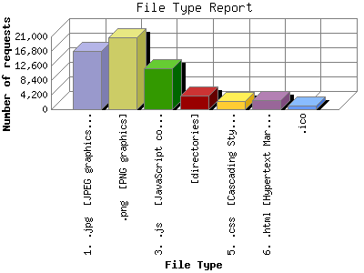

The File Type Report identifies the type of information that is requested from the web site. GIF and JPG are the two types of graphic (image) files that are most commonly supported by web browsers. HTML (sometimes abbreviated HTM), ASP, and [directories] all represent actual pages. The number of image requests will almost always outnumber page requests as one page may contain several images.
This report shows results with at least 0.100000 percent of the total bytes. This report is sorted by amount of bytes transferred.

| File Type | Number of requests | Percentage of the bytes | |
|---|---|---|---|
| 1. | .jpg [JPEG graphics] | 16,832 | 55.97% |
| 2. | .png [PNG graphics] | 20,702 | 36.27% |
| 3. | .js [JavaScript code] | 11,794 | 4.07% |
| 4. | [directories] | 3,884 | 2.31% |
| 5. | .css [Cascading Style Sheets] | 2,386 | 0.54% |
| 6. | .html [Hypertext Markup Language] | 2,539 | 0.41% |
| 7. | .ico | 1,097 | 0.27% |
| [not listed: 6] | 2,244 | 0.15% | |
This report was generated on June 1, 2011 12:50.
Report time frame February 2, 2011 13:52 to May 31, 2011 23:28.
| Web statistics report produced by: analog 6.0 / Report Magic 2.21 |